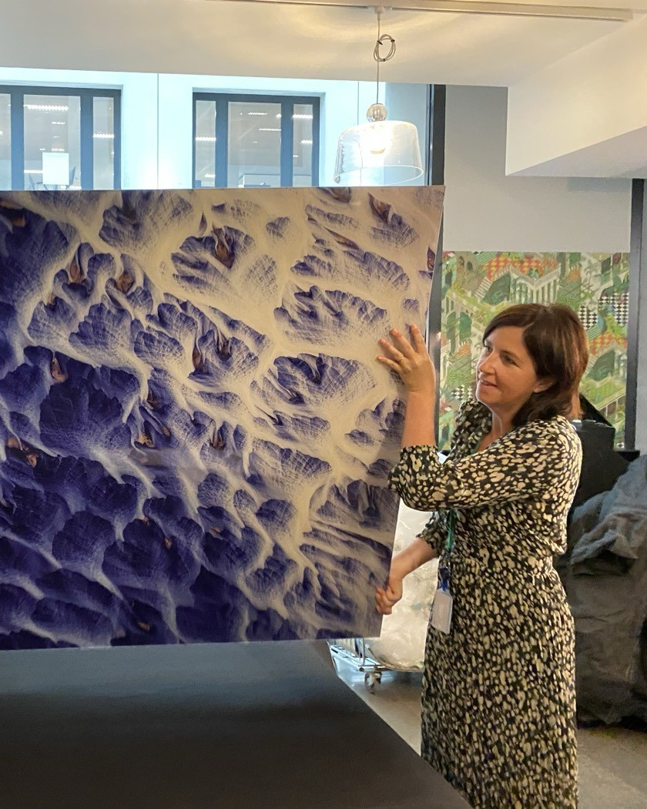

Encadreur d'art à Luxembourg
Nous encadrons, dorons et restaurons vos œuvres, du dessin de famille aux 200 portraits officiels de la Cour grand-ducale. Un savoir-faire d'atelier perfectionné depuis 1972, à Hollerich.



Cadres standards
Aluminium anodisé ou bois Nielsen, prêts à l'emploi. Une sélection permanente à l'atelier, à composer aussi en ligne et à retirer en une heure à Hollerich.
Cadres sur mesure
Chaque œuvre dicte sa baguette, son passe-partout et son verre. Nous étudions le format, la lumière et le lieu, puis nous réalisons le cadre à l'atelier.
Dorure & restauration
Tableaux, dorure à la feuille et patrimoine familial. Diagnostic à l'atelier, agrément monuments historiques, interventions mesurées pour rendre à la pièce sa présence.
Institutions & entreprises
Collections corporate, hôtellerie et institutions. Grands formats, séries et pose sur site, du Luxembourg à la Grande Région.
Un savoir-faire transmis depuis 1972
Le savoir-faire remonte à 1972, à Metz. Après plus de trente ans d'atelier, Kathia Neumann a voulu le porter plus loin et a créé Art'Cadres à Hollerich.
Particuliers, artistes, collectionneurs, architectes, décorateurs et institutions y trouvent un accompagnement personnalisé, du petit cadre aux très grandes pièces. Nous réalisons aussi vos tirages photo, petits et grands formats.

Art'Cadres Luxembourg
Encadrement sur mesure
Baguette, passe-partout et verre choisis pour l'œuvre, réalisés à Hollerich.

Cadres Nielsen
Aluminium ou bois, à composer en ligne, à retirer en une heure.

Grands formats
Des médailles aux panneaux de plusieurs mètres, pose sur site.

Restauration de tableaux
Diagnostic avec Sylvie Schied, agréée monuments historiques.

Dorure à la feuille
Cadres, miroirs et objets dorés selon les techniques traditionnelles.

Galerie d'art
Une collection choisie, encadrée et mise en lumière.

Tirage photo
Petits et grands formats, réalisés pour l'encadrement à l'atelier.
Votre devis, en quelques clics
Composez votre cadre en ligne : baguette, passe-partout, verre. Le prix se calcule en direct, sans engagement.
Click & Collect · retrait en 1 h à l'atelier
Des institutions, des marques et des artistes nous confient leurs œuvres
Deloitte, Accor, SES, la Bibliothèque nationale du Luxembourg, la Cour grand-ducale, SODIKART et M.Chat : nous encadrons leurs collections avec la même exigence artisanale.


Du format intime au monumental
Nous encadrons et installons sur site
Des médailles aux panneaux muraux de plusieurs mètres : nous maîtrisons l'encadrement sur mesure et la pose en entreprise, pour les particuliers comme pour les institutions.
Page grands formats
Nous encadrons tout type d'objet


Réalisations encadrées
Pop-art, street-art, aquarelles, photographies et pièces de collection : découvrez une sélection de nos encadrements sur mesure.


Questions fréquentes
Combien coûte un encadrement sur mesure ?
Le prix d'un encadrement sur mesure au Luxembourg dépend du format, de la baguette, du passe-partout et du verre. Pour les cadres Nielsen courants, notre configurateur calcule le tarif en direct : vous voyez le montant avant de vous déplacer à Hollerich. Un montage museum, une Marie-Louise biseautée, une caisse américaine, un objet en volume ou un verre anti-UV à 99 % sortent du catalogue : nous établissons alors un devis à l'atelier, sans engagement. Les grands formats et les séries d'entreprise suivent un chiffrage à part, avec pose sur site si besoin. Apportez l'œuvre ou les cotes : nous vous indiquons une fourchette dès le premier rendez-vous.
Quel est le délai ?
Un cadre standard Nielsen se retire souvent en Click & Collect dans l'heure, selon le stock à l'atelier. Un encadrement sur mesure prend en général quelques jours : le temps de commander la baguette, de couper les cartons et de monter le verre. Les montages museum, les objets et les très grands formats demandent davantage de préparation. Une restauration de tableau suit un planning propre, convenu après diagnostic, car le séchage des vernis et des apprêts ne se précipite pas. Pour une commande institutionnelle (portraits officiels, série d'hôtel, panneaux Deloitte), nous verrouillons les dates de pose avec vous dès le devis.
Faut-il prendre rendez-vous ?
Oui. Nous vous accueillons sur rendez-vous, mercredi au samedi de 10 h à 18 h, au 2 bis rue de la toison d'or à Hollerich (L-2342 Luxembourg). Le rendez-vous permet de sortir les échantillons, de regarder l'œuvre à la lumière de l'atelier et de parler budget sans file d'attente. Appelez le +352 27 84 94 88 ou écrivez à contact@artcadres.lu : nous répondons sous 48 h ouvrées. Indiquez si possible le format, le type de pièce (papier, toile, objet, restauration) et si vous souhaitez un Click & Collect Nielsen ou un montage artisanal. Parking de quartier à proximité.
Puis-je composer mon cadre en ligne sans venir ?
Oui, pour les formats courants Nielsen. Choisissez baguette, passe-partout et verre dans le configurateur : le prix s'affiche tout de suite, sans engagement. Le retrait se fait à l'atelier (pas d'envoi postal). Pour une œuvre fragile, un objet, une médaille, un textile, un verre de conservation ou un format hors catalogue, un passage à Hollerich reste le plus sûr. Le configurateur ne voit pas le grain du papier ni l'épaisseur d'un relief : ces choix se font autour de la table, avec les échantillons. Vous pouvez commencer en ligne, puis nous affiner le montage sur place.
Encadrez-vous les très grands formats ?
Oui. Des médailles aux panneaux muraux de plusieurs mètres : nous encadrons et installons sur site, dans un rayon d'environ 25 km autour de Luxembourg-Ville, plus loin pour les comptes suivis (Betzdorf, Metz). Deloitte, Accor, SES, la Bibliothèque nationale et la Cour grand-ducale nous ont confié des pièces monumentales et des séries protocolaires. Le grand format n'est pas un cadre agrandi : il faut un châssis adapté, un verre ou un plexi calculé, et une pose à deux. Particuliers artistes et collectionneurs : même atelier, même exigence. Voir la page dédiée aux grands formats.
Restaurez-vous les tableaux, ou uniquement l'encadrement ?
Nous restaurons aussi. Vernis jaunis, salissures, petites déchirures, soulèvements de couche picturale : le diagnostic se fait à l'atelier avec Sylvie Schied, restauratrice agréée monuments historiques. L'agrément MH est une reconnaissance de l'État français pour intervenir sur le patrimoine classé : il engage une méthode, pas une retouche décorative. Nous ne repeignons pas une œuvre au neuf. L'encadrement et la dorure à la feuille viennent ensuite, quand la pièce le demande. Apportez le tableau sans le démonter vous-même. Devis écrit, aucune intervention sans votre accord.
Quelle est la différence avec un cadre prêt-à-poser ?
Un cadre de grande surface se choisit au format du commerce. Chez nous, la baguette, le carton PH neutre et le verre sont choisis pour l'œuvre, sa lumière et le mur. Conservation, ajustement au millimètre, finition atelier : ce n'est pas le même métier. Un kit 40 × 50 convient à une affiche. Une aquarelle, une lithographie ou un pastel ont besoin d'un passe-partout sans acide et souvent d'un verre anti-UV. L'express 48 h d'une chaîne limite le catalogue. Nous combinons le Click & Collect Nielsen pour les formats simples et le sur-mesure pour tout ce qui sort de la boîte.
Quels verres proposez-vous ?
Verre minéral standard (2 mm, chants polis), verre anti-reflet pour le confort visuel, et verres de conservation anti-UV de 55 % à 99 % selon l'œuvre et le budget. Le verre musée (souvent appelé museum) coupe presque tout le rayonnement ultraviolet et réduit les reflets : il est indiqué pour les photographies, les aquarelles et les pièces à transmettre. Un tirage récent en intérieur peu exposé peut rester en verre standard. Nous posons le verre à l'atelier, jamais en kit collé. Le choix se fait autour des échantillons, à Hollerich, en tenant compte de la lumière du lieu d'accrochage.
Établissez-vous des factures pour les entreprises ?
Oui. Devis, facture et pose sur site pour les directions communication, architectes d'intérieur, hôtels et collections corporate. Confidentialité et planning adaptés aux institutions (sièges, palais, bibliothèques). Nous travaillons déjà avec Deloitte, Accor (ibis Styles, Mercure, MGallery), SES à Betzdorf, la Bibliothèque nationale du Luxembourg et la Cour grand-ducale (plus de 200 portraits officiels). Un e-mail avec les cotes, le lieu de pose et le volume suffit à ouvrir le dossier. Paiement et mentions légales : voir nos CGV. Page dédiée : institutions et entreprises.
Où se trouve l'atelier ?
Art'Cadres est à Hollerich, Luxembourg-Ville : 2 bis rue de la toison d'or, L-2342. Tél. +352 27 84 94 88. E-mail contact@artcadres.lu. Horaires : mercredi au samedi, 10 h à 18 h, sur rendez-vous. Un savoir-faire d'encadrement transmis depuis 1972 par Kathia Neumann. Pose des grands formats dans un rayon d'environ 25 km (Howald, Kirchberg, et au-delà pour les comptes suivis). L'atelier réunit encadrement, restauration, dorure et une galerie. Plan Google Maps sur la page Contact.
Ils nous ont fait confiance, ils en parlent
« Une adresse de confiance pour tous vos travaux d'encadrement. Mes œuvres ont toutes été parfaitement mises en valeur grâce aux conseils et au travail des artisans. »
« J'ai confié l'agrandissement et la mise en cadre d'une photo, je suis ravi du résultat. Travail soigné, de très haute qualité, service impeccable. »
« Charmant accueil dans un cadre chaleureux, conseil personnalisé et professionnel. Vaste choix de cadres sur mesure, finition de qualité. »
« Parfait du début à la fin. Un travail de grande qualité, de très bons conseils et une vraie attention du détail, tout en maîtrisant le coût final. »
« L'encadrement de notre lithographie est juste parfait. Votre savoir-faire a sublimé l'œuvre. Merci pour la qualité et le soin des finitions. »